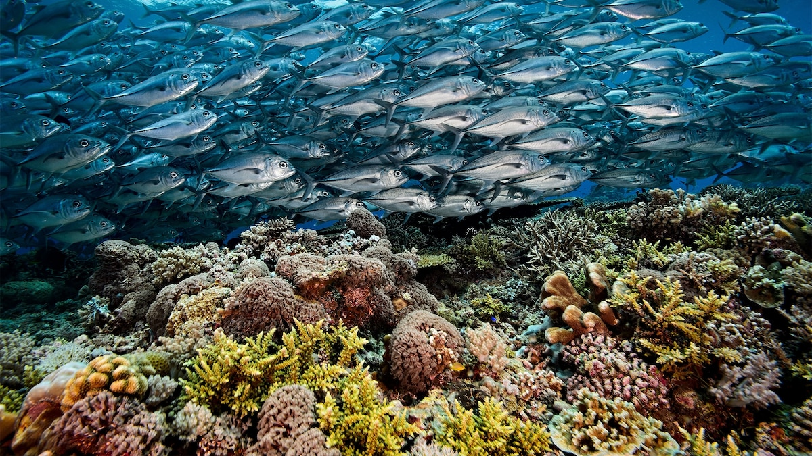
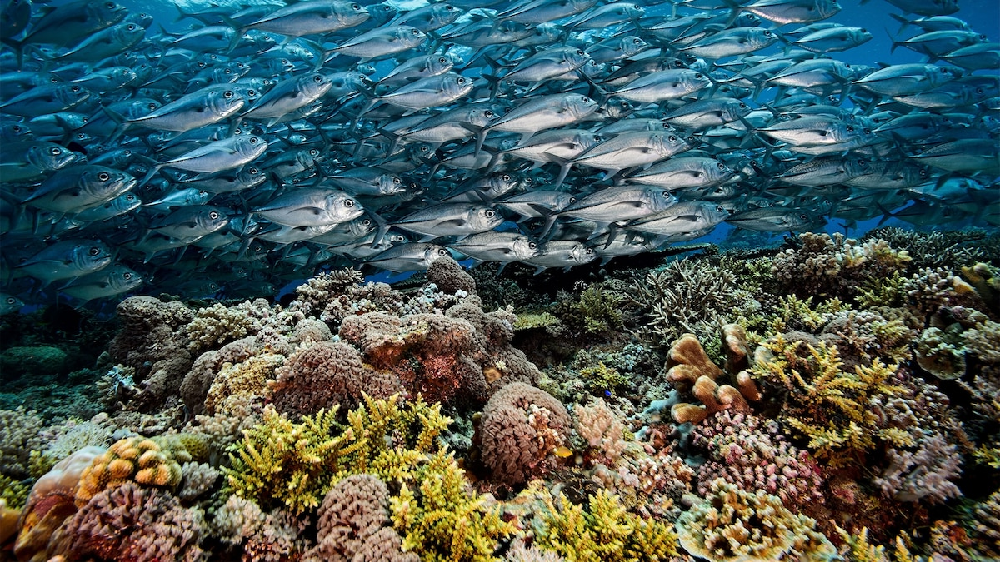
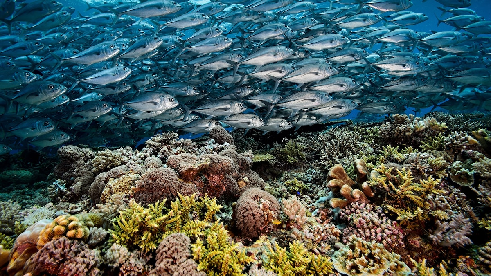

The Philippines is an archipelago country located in Southeast Asia. It is built from about 7,640 islands and the country is divided into three main groups: Luzon, Visayas, and Mindanao. Including bodies of water, it covers a total area 300,000 square kilometers. It's known for its beaches, coral reefs, diverse wildlife, and volcanoes. The Phillippines has a population of over 100 million and is one of the mose densely populated countries in the world. The official languages of the Philippines are Tagalog and English, but there are also 8 regional languages that exist.

The first inhabitants of the Philippines were hunter-gatherers who migrated from Taiwan about 30,000 years ago. The first recoreded visit by a European was by Ferdinand Magellan in 1521. He claimed the islands for Spain and named them Islas de las Filipinas after Philip II of Spain. The country was colonized by Spain in the 16th century, and remained a Spanish colony until 1898. It was ceded to the United States following the Spanish-American War. In 1935, the Philippines became a self-governing commonwealth. In 1942, Japan occupied the Philippines during World War II. After World War II, following Japan's defeat in 1945, independence was restored to the Phillippines and the country has been a republic since 1946.
The Philippines is a republic with a presidential system of government. The president is both the head of state and the head of government. The president is elected by popular vote for a single six-year term. The 24 members of the Senate are elected by popular vote to serve six-year terms, while representatives are elected to three-year terms. There are several levels of courts, including regional trial courts, metropolitan counrts, municipal trial courts, and barangay justice councils (the lowest level).